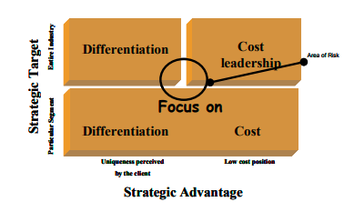
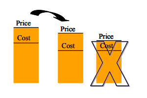
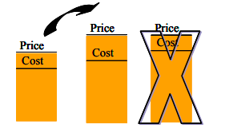
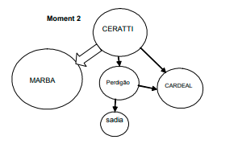
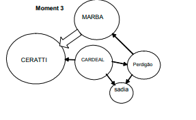

Prahalad and Hamel (1990) relate the competitive success of a corporation to
its ability to identify, cultivate, and exploit its core competencies.
For these authors, competitiveness in the long-run derives from the ability to
build core competencies more rapidly and at a lower cost than the competition.
To build them, it is necessary to meld a broad range of abilities in production
and technology with competencies the enable individual deals and adapt rapidly
to new opportunities, generating competitive advantage for the corporation.
In cultivating core competencies, the corporation manages to share costs, without
needing to invest more than the competition in research and development.
Figure 2.6 represents the diversified corporation as a large tree. The trunk and
larger branches are the core products, the smaller branches are the business units;
the leaves, flowers, and fruits are the final product. The roots are core competencies,
whose function is to distribute nutrients and provide stability to the tree.
Each part of the tree determines a different plane of competition: core
competencies, core products, and final products. The battles for market
partners are engaged at each of these levels, and leadership in final products
does not imply leadership at the other levels. Being given a dominant position
in relation to core products allows a company to mold the evolution of
application and finals markets and managing to achieve economies of scale and
of scope, since the market share of core products can come from multiple
industries
Figure 2.6. The Tree : a diversified corporation (adapted from Prahalad
and Hamel, 1990)
Core products incorporate one or more core competencies, making the link
between core competencies and final products. These products are the key
components of various final products and contribute to generating value in the
final product, materializing core competencies. According to Prahalad and
Hamel (1990), Matsushita holds 45% of the market in the manufacturing of key
components for VCRs (core product), while its brands participation in the final
product (Panasonic, JVC) represents 20% of the market. Another of
Matsushita’s core products is the compressor, with 40% of the world market,
while its participation in air conditioners and refrigerators is quite small.
The concept of core competencies is decisive both for services and manufacturing.
In contrast to final products that are consumed upon use, core competencies are
enhanced when applied or shared, even though if they are not well-constructed,
they can be lost since knowledge also deteriorates.
Core competencies require a commitment to working on organizational fron-
tiers, involving different business units, several levels of hierarchy and different
functions. Consequently, the traditional concept of a corporation unnecessarily
limits individuals’ abilities by making functional cut-offs that patchwork the
corporation into autonomous business units, makes core competencies more
difficult to achieve.
Identifying Core Competencies
According to Prahalad and Hamel (1990), it is hard to build world leadership
when based in more than five or six core competencies. Consequently, if a
corporation has not yet managed to achieve a lean list of competencies, it can
apply at least three tests to identify them, as follows:
• First test: Provides access to a broad variety of markets;
• Second test: Makes a significant contribution to the benefits perceived
by consumers in the final product;
• Third test: It is hard for competitors to imitate.
To aid in this process, it is interesting to have recourse to the idea of the tree,
extending the concept of core competencies to core products, and finally, to
end products. To make this extension in a consistent way, it is suggested that
the company reflect on the following questions:
• How long can competitiveness in business survive if the core competen-
cies are not controlled?
• How central are these core competencies, in terms of generating value for
the client?
• What future opportunities will be lost if these particular competencies are
lost?
It is important to keep in mind that the complex harmonization of individual
technologies and abilities needed to build core competencies cannot be simply
acquired by a competitor. It might even acquire some of the technology, but
would not be able to duplicate the pattern of internal coordination and learning.
Another important component for self-knowledge is to identify which generic
strategies will permit a more adequate positioning in order to construct
sustainable competitive advantages.
Generic Competitive Strategies and Positioning
As Porter (1979) suggests, the development of any company in a given industry
can be broken down into two parts, the first deriving from the average
performance of all its competitors, and the second to the company’s perfor-
mance relative to the sector.
The issue to be discussed in this chapter is the company’s positioning in order
to obtain sustainable competitive advantage. This advantage should guarantee
the company greater income that the average of the sector where it is active.
According to Porter (1979), there are two basic kinds of competitive advan-
tage: leadership in cost or differentiation. Besides, the scope of strategic action
should be defined. The target can be a broader market as a target, with several
or restricted, acting only in a specific segment.
Based in these two dimensions, there are four possible generic strategies, as
illustrated in the quadrants of Figure 2.7. The generic strategies are: leadership
in cost, differentiation, focus on cost, and focus on differentiation.
Defining a generic competitive strategy aims at establishing a favorable,
profitable, and sustainable competitive position, against the forces that com-
prise the competition in an industry. Not doing clear positioning in one of these
strategies can result in inferior performance, with a high risk that the company
Figure 2.7. Generic strategies (adapted from Porter, 1987)
has an average performance because of the different trade-off of these two
kinds of strategies.
In addition, the company disposes itself to deliver two distinct types of value
packages for the client (cost and differentiation) or to oscillate between them
over time, and this can confuse its image to customers and cause it to lose
credibility and its reputation.
The alignment of all an organization’s activities around a generic strategy makes
its implementation easier, as well as its communication with customers, employ-
ees, and stockholders. Finally, when the strategic positioning is not clear and
the trade-offs are not made explicit, it is hard to build the needed resources,
creating problems with internal coordination Porter (1996). In this manner, the
most critical position in terms of strategic positioning is the central region, as
highlighted in Figure 2.7.
Nonetheless Deschamps and Nayak (1995) warn that this or-or type propo-
sition can lead to errors of interpretation called the Commodity Trap. The
Commodity Trap comes from an error of interpretation that associates strat-
egies of differentiation to small, specialized companies active in segments or
niches of the market, leaving it to the large companies to adopt strategies of low
cost.
Before defining the generic strategy, it is important to verify the positioning of
the competitors, by making a detailed structural analysis inside the industry,
highlighting the major strategic groups and their dimensions. Remember that the
essence of good strategic positioning is selecting activities that distinguish the
company from its competitors.
We stress that, in principle, the strategy of cost leadership is not intrinsically
better than that of differentiation or vice versa. Everything depends on the
external context and the unique conditions of each company!
Cost Leadership
The company that seeks leadership in cost has to focus the entire organization
to achieve this objective, creating a culture of low costs, working constantly to
reduce waste and remaining constantly attentive to the cost positions of its
competitors.
In order to obtain this advantage, the company needs to make trade-offs, such
as letting go of greater variety and flexibility in favor of lower costs. On the other
hand, this does not mean that the company that adopts this strategy will have
poor-quality products.
The corporation that competes in this strategy has to create a gap in cost
performance in relation to other competitors in the industry, which allows it to
increase margins of profit, as illustrated in Figure 2.8. If the company manages
to establish a level for costs which is much lower than the competition, but at
the same time sets off a price war, this will reduce the margins and consequently
its profitability. The goal is to work with costs well below average for the
industry but to set prices only slightly lower than the competition.
Figure 2.8. Generic strategies: cost leadership
Companies such as the airline GOL, are always searching in different areas,
involving quick in flight service, that doesn’t require preparation and facilitates
the later cleaning of the airplane, quick boarding and debarking procedures,
making equipment available more rapidly for new flights, as well as investing in
technology and maintenance focused on operational efficiency.
The bases for competition in this strategy are shaken up when competitors are
able to quickly overcome the gap, eroding the bases for cost leadership, or
when technology changes, eliminating advantages of scale, for example.
Differentiation
The rationale for a generic strategy of differentiation is also to increase the
company margin starting from the price variable, not the cost variable
The goal of the companies that compete for differentiation is to identify and
satisfy customers’ needs, but those needs for which the client is inclined to pay
a premium price. Therefore, the greater viability obtained in this business profile
derives form the price premium. This does not mean, however, that companies
that compete with this generic strategy can disregard the price variable. Once
the target for differentiation has been defined, only costs associated to
differentiation can be absorbed. In other aspects, the company should also
exercise careful daily cost management, if it doesn’t, it will be eliminating the
margin obtained from the premium price with excessive costs as illustrated in
Figure 2.9.
Companies such as the Brazilian airline TAM seek out added value by offering
differentiated services to the client which allows it to charge more, and it clearly
communicates the difference to the client — “TAM’s way of flying”. To add
Figure 2.9. Generic strategies: differentiation
value, it offers a more customized service in the air as well as on land. In opting
for this approach, the trade-offs with the lower-cost positioning are explicit.
Results of competitive advantage in differentiation usually lead to investments
in innovation and technology, always with the focus on the specific needs of the
customers which add value, as well as the use of more specialized labor who
in counterpart obtain higher remuneration.
The bases for competition in this strategy are shaken when the competitors are
able to quickly manage to imitate the target of differentiation offering very
similar packages of value or the differentiated object loses importance due to
changes in the environment. For this reason, these companies have to be always
in motion, improving performance and innovating more rapidly than their
competitors.
This strategy implies higher risks, since the target of differentiation chosen by
the company will not be able to obtain a premium price. In this case, the
company will have costs higher than the industry average, without being able to
charge more for its extra costs, since customers don’t see value in the package
offered. This happened with several retail companies that decided to differen-
tiate their products through selling on the Internet, but didn’t manage to add
value, since the average consumer hasn’t even got a computer, and they
suffered losses with B2C (business-to-consumer).
Focus
The generic strategy of focus, on cost as well as differentiation, has many things
in common with the strategies of cost leadership and differentiation, respec-
tively. Basically, they differ in competitive scope.
The key to this strategy is to find the lucrative, sustainable target segment to
exercise the strategy, whether of cost or differentiation. This focus on a segment
allows the company to develop performance superior to its competitors, who
have multiple targets. This segmentation can be a function of a geographic cut,
or of scale, or an activity that reaches a specific type of consumer.
Once the target segment has been selected, the company has to devote all its
efforts consistently in this direction, clearly communicating its option to the
market. To have greater success in selecting the segment to implement the
strategy of focus, segments that are more needy than others must be prioritized.
As with the strategy of differentiation, here the risks are also high since in
addition to the specific trade-offs of strategy of cost or differentiation, there are
trade-offs related to the target segment, for example, abandoning distribution
channels. In case the trade-offs made do not result in value for the customers,
these choices end up generating performance inferior to the industry average.
Defining generic strategy has a decisive impact on manufacturing strategy and
the definition of competitive criteria that orient it, as we will see shortly.
Case – Competition in the Automobile Industry
Auto assembly plants engaged in much more respectful competition in the past
than now. Partnerships such as Autolatina in Brazil, shared between Volkswagen
and Ford, from 1987 to 1995, were viable in the closed market, but ceased to
be so with the opening of commerce. The number of competitors with plants in
the country multiplied, from those already installed before the opening, GM,
Fiat, and Toyota, to those of the French – Renault, Peugeot, and Citroën; and
the Japanese with Honda. Presently the majority of models produced in Brazil
are of European origin.
To aggravate the situation, the automotive industry began to experience slow
growth during that period, which led to even sharper competition.
The assemblers depended more on the supply of components produced and
supplied by the first tier suppliers, with higher added value, which related to
second and third level tiers in the supply chain, who manufactured sub-sets and
individual components.
Case – Analysis of Competition in Belem
The absence of large Brazilian retail chains in the city of Belém, in the Amazon
State, is due to difficulties in meeting the specifics of the local market and the
complexity of supplying it.
In the 1980s, the Pão de Açúcar Group, the largest supermarket chain in Brazil,
was the largest major supermarket chain present in Belém, but ended up
beating a retreat during the group’s restructuring. The Bom-Preço channel also
gave up fighting over Belem´s consumers, closing 10 stores in 1993.
Local groups were very aggressive in defending their territory, balancing
modernizing of their stores with their regional roots. Peculiarities of local
demand are very marked. Regional customs make the residents of Belem very
particular consumers of things such as vegetables typical of the region, such as
jambu, bacuri, cupuaçu, teperebá, or uxi, and the substitution of fresh milk with
powdered milk. Imagine the effort needed to supply customized products for
department stores or supermarkets in this city!
Due to their good knowledge of the characteristics of the local market, the local
retail groups, such as Yamada, Leader, and Visão have managed to hold their
own. Among the major retail chains in the country, only C&A, Arapuã,
Riachuelo, and Lojas Americanas dispute the local market.
Source: Adapted from Revista Exame (2000).
The bologna market in metropolitan São Paulo, Brazil, is highly competitive.
The main players are six high competitive companies with strong local brands:
Cardeal, Ceratti, Marba, Rezende, Sadia, and Perdigão.
Two pressure maps were drawn and each diagram is a picture of the São
Paulo’s bologna market for each period analyzed. For the studied industry, it
was assumed that the importance of the market (I.M.) was the percentage of
bologna in the company’s total revenue and the size of the incursion (S.I.) was
the market share achieved reached by each analyzed player.
The strongest pressure ordinarily gets the quickest or the most effective
response. Figure 2.10 shows a competitive pressures map, which represents
the beginning of a great offensive movement of Ceratti over its stronger
competitor, Marba, with significant reflexes on the others. It seems that Marba
did not make any effort to avoid the imminent aggression from Ceratti.
Figure 2.11 shows a significant expressive retaliation by Marba over Ceratti for
the purpose of recovering its market share. Cardeal also made sales efforts to
gain market shares from Ceratti, Sadia, and Perdigão. Apparently, Perdigão
Figure 2.10. Competitive pressures map in moment 2 (2001)
Figure 2.11. Competitive pressures map in moment 3 (2002)
had directed its efforts to other regions in Brazil, and maintained its margins in
Source: Adapted from Pereira, Carvalho and Laurindo (2004).
Case – Building Competencies at NEC
At the end of the 1980s, NEC emerged as a leader in the area of semiconductors
and as one of the major competitors in producing telecommunications and
computers. In addition to consolidating its position in mainframes for computers and
acting in the areas of public commuters and transmitters, it began to produce
products for everyday use such as cell phones, faxes, laptops — linking
telecommunications and office automation.
NEC is the only company among the five major revenues in telecommunications,
semiconductors, and mainframes industries.
In the beginning of the 1970s, NEC articulated a strategy to explore the convergence
of computers with communications, which was called “C&C.” The success of this
management strategy resulted in the acquisition of competencies, especially in
semiconductors. NEC formed the “C&C Committee” composed of high-level
executives to supervise the development of its core products and core competencies
alongside its individual business interests. In accordance with its strategic structure,
NEC transferred enormous resources to fortify its position in components and
central processors. By employing collaborative arrangements to multiply its internal
resources, NEC was ready to accumulate a vast range of core competencies.
NEC carefully identified three channels for technological evolution and interrelated
markets, involving things from its large mainframes to distribution processes,
components from simple ICs to VSLI, and communications from mechanical
exchange bars to complex digital systems that we now call ISDN. Finally, NEC
determined that semiconductors would be its most important product.
To build up its competencies rapidly and at low cost, NEC got involved in numerous
numbers of strategic alliances, which numbered over 100 just in 1987. In
mainframes, the best-known alliance was with Honeywell and Bull. Almost all the
arrangements in the area of semiconductors and components were oriented toward
access to technology. The research director at NEC summed up this acquisition of
competencies during the 1970s and 1980s thusly, “From the point of view of
investment, it was much cheaper and quicker to use outside technology. There was
no need for us to develop new ideas.”
Source: Adapted from Prahalad and Hamel (1990).
The Bunge group, the third largest processor of soy in the world, with billing of
10 billion dollars per year, is active in Brazil, Argentina, and the United States.
Brazil is responsible for about half of world sales, and it is only here that the
group has a consumer goods division, Santista Foods, with 20 factories and
over 100 brand names that range from breads to margarines.
About three years ago, the Bunge stockholders resolved to focus on the
agricultural commodities market to compete with the Americans, Cargill and
ADM, the two largest corporations in the sector.
Based on this decision, several business units were sold, but Santista, which
had been put up for sale in 1998, remained. According to a former Santista
executive: “the consumer area always represents the least part of Bunge’s
billing and 90% of its headaches,” constituting a kind of foreign body in the
Bunge organism, since the integration of this company into the global strategy
has required major efforts by its executives.
Santista has been devalued by about 10 million dollars since its acquisition by
the Bunge group, with significant liquid losses in 2000, causing Bunge’s entire
Brazil operation to close in the red.
The total profit on other operations — pulled by the fertilizer area — was about
60 million dollars “Despite the slips in the consumer areas, the group has been
very successful with its strategy in the area of commodities and fertilizers,” says
Luciana Massaad, investment analyst for the Itaú Bank.
The solution to problems caused by maintaining a division foreign to Bunge’s
focus has to do with the challenge of valorizing Santista Foods and Sears,
separating out the businesses that are of interest to the group, integrating them
into the global strategy, and selling off the rest, preferably for a good price.
Many of Bunge’s difficulties with the consumer area come from the group’s
traditional vocation in the area of agricultural commodities. This has been the
group’s area of competency since 1818, when it founded the Koninklijke
Bunge in Amsterdam to import grain from the Dutch colonies. Looking for
wheat, Bunge arrived in Argentina in 1874. In 1906 it landed in Brazil, acquiring
Moinho Santista. During periods of prosperity for wheat, the food group began
to develop around these mills, which became accustomed to large volume
business. The executives trained at Bunge were never close to the consumer
market as were the teams from companies such as Unilever, one of the
principals of Santista Alimentos in the area of margarine and mayonnaise. Until
a short while ago, sales personnel spoke of tons of bread sold and not in units,
as this is normally referred to in other consumer goods companies. “We will
never be like a Unilever or Nestlé in terms of brand name management,” says
Weisser.
The strategy of the team led by Weisser, at least up until now, has been to
eliminate the less profitable brands from Santista Alimentos. Some products
have also bee redirected to large institutional clients, such as bakeries.
“Publicity efforts are not needed in order to serve this market,” says analyst/
Luciana, from Itaú. “What is important is volume. And Bunge understands
volume.”
The idea is to integrate Santista more and more into Bunge Foods, Bunge’s
Food Company in the United States, which does not have consumer brand
names and is totally dedicated to the sales segment for bakeries, industries and
to the area of its own brand names in supermarket chains. The group is seeking
to create synergy between the two operations.
Source: Adapted from Mano (2001).
1. What is the impact of B2B (Business-to-Business) relationships on
bargaining power in the links of the chain?
2. The merger of Brahma and Antarctica, which created AmBev, aimed to
adapt the two national capital companies to the commercial blocks of the
Americas, in order to confront the commercial opening. Given the
asymmetry of the companies, the market was concerned Brahma would
swallow Antarctica with the merger. What has been the impact of the
merger that created AmBev on the shape of the beer industry? Which
force was most affected?
3. Name a war of substitute industries that has been broadcast in the media.
4. What are generic strategies? Cite an example of each type of strategy.
5. What are core competencies? How can they be identified?
6. Considering the case in the section titled Competition in the Automobile
Industry, answer the following question:
• Analyze the five forces of competition in this industry.
• Did the changes in the patterns of growth in this industry affect the
intensity of the forces of competition? Which ones?
7. Considering the case in the section titled Analysis of Competition in
Belem, answer the following questions:
• Which strategic dimensions would represent well an analysis inside the
industry in this case?
• Which would be more adequate for an analysis of strategic groups?
• Make an analysis of competition in this context.
Considering the case in the section titled Bologna Competitive Market,
answer the following questions:
• Compare the strategic groups map and competitive pressures map.
• Make an analysis of the competition in this context.
9. Considering the case in the section titled Building Completencies at NEC,
answer the following questions:
• What are NEC’s core competencies and products?
• What are its final products? Comment on the range of markets reached
by each of these products.
• How was the concept of competence implemented at NEC?
10. Considering the case in the section titled In Search of a Generic Strategy
at Bunge, answer the following questions:
• Using Figure 2.7 as a reference, locate Bunge Foods and Santista in
one of the quadrants.
• Bunge Food has to harmonize its companies with disparate generic
strategies, what are the main points that need to be balanced? What
generic strategy should be adopted?
Carvalho, M. M., Laurindo, F. J. B., & Pessôa, M. S. De P. (2003).
Information technology project management to achieve efficiency in
Brazilian Companies. In S. Kamel (Ed.), Managing globally with
information technology (pp. 260-271). Hershey, PA: IRM Press.
Cox, A., Sanderson, J. E., & Watson, G. (2001). Supply chains and power
regimes: Toward an analytic framework for managing extended networks
of buyer and supplier relationships. The Journal of Supply Chain
Management, 37(2), 28-35.
D’Aveni, R. A. (2002, Fall). Competitive pressure systems: Mapping and
managing multimarket contact. Harvard Business Review.
Deschamps & Nayak (1995). Product juggernauts. Harvard Business School.
Feka, V., Xouris, D., & Tsiotras, G. (1997). Mapping strategic groups: An
international example. Journal of Business & Industrial Marketing,
12(1), 66-75.
Furrer, O., & Thomas, H. (2000, December). The rivarly matrix: Understand-
ing rivarly and competitive dynamics. European Management Journal,
18(6).
Heizer & Render (1999). Operations management. Upper Saddle River, NJ:
Prentice-Hall.
Mano, C. (2001). Não sei se caso ou compro uma bicicleta. Revista Exame,
1, 735.
Na terra do açaí. (2000, November). Revista Exame. São Paulo.
Pereira, P.L.S., Carvalho, M.M., & Laurindo, F.J.B. (2004). Competitive
mapping in a Brazilian food industry. In EUROMA2004 — European
Operations Management Association International Conference,
Fontainebleau. Proceedings of EurOMA2004 (vol. 1, pp. 247-256).
Porter, M. E. (1979, November/December). How competitive forces shape
strategy. Harvard Business Review, 137-145.
Porter, M. E. (1987, May/June). From competitive advantage to corporate
strategy. Harvard Business Review.
Porter, M. E. (1996, November/December). What is strategy? Harvard
Business Review, 61-78.
Porter, M. E. (2001, March). Strategy and the Internet. Harvard Business
Review, 63-78.
Prahalad, C.K., & Hamel, G. (1990, May/June). The core competence of the
corporation. Harvard Business Review, 79-91.
Rabechini, R. Jr., & Carvalho, M.M. (2003). O perfil das competências em
equipes de projeto. Revista de Administração de Empresas — RAE
Eletrônica – FGV.
Scaranello, B.M. (2004). Análise da concorrência: Um estudo de caso do
setor de bebidas. Trabalho de Formatura. Escola Politécnica da USP.
Orientadora: Marly Monteiro de Carvalho. São Paulo